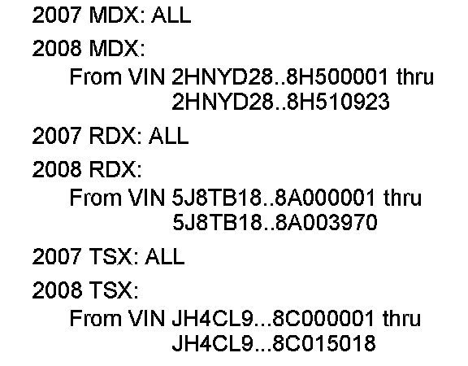
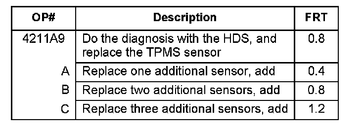

Tire Monitor System - Indicator Stays ON/Pressures OK
07-057November 16, 2007
Applies To:
See VEHICLES AFFECTED
Low Tire Pressure Indicator Stays On, But All Tire Pressures Are OK
SYMPTOM
The low tire pressure indicator stays on, but all of the tire pressures are OK.
PROBABLE CAUSE
The TPMS sensor indicates a lower pressure than the actual tire pressure.

VEHICLES AFFECTED
CORRECTIVE ACTION
Replace the faulty TPMS sensor(s).
PARTS INFORMATION
TPMS Sensor: P/N 42753-STK-A02
TOOL INFORMATION
Tire Pressure Gauge: TIN O7AAJ-OOOA1OO
WARRANTY CLAIM INFORMATION

In warranty:
The normal warranty applies.
Failed Part: P/N 42753-STK-A02
Defect Code: 03217
Symptom Code: 03220
Skill Level: Repair Technician
Out of warranty:
Any repair performed after warranty expiration may be eligible for goodwill consideration by the District Parts and Service Manager or your Zone Office. You must request consideration, and get a decision, before starting work.
DIAGNOSIS
1. Inflate all of the tires to the recommended pressure shown in the doorjamb. Use the recommended tire pressure gauge to make sure the pressures are accurate.
2. Drive the vehicle until you see the pressure change in the multi-information display (MID).
3. Check the pressures of all of the tires in the MID. Are all of the tire pressures shown in the MID within 3 psi of what you set them at?
Yes - You are finished.
NOTE:
This is not a warrantable repair if the low tire pressure indicator goes off with proper air pressure.
No - Go to REPAIR PROCEDURE to replace any sensor that is not within this specification.
REPAIR PROCEDURE
Replace the faulty sensor(s):
^ Refer to the appropriate service manual, or
^ Online, enter keywords TIRE SENSOR, and select Tire Pressure Sensor Replacement from the list.

Disclaimer